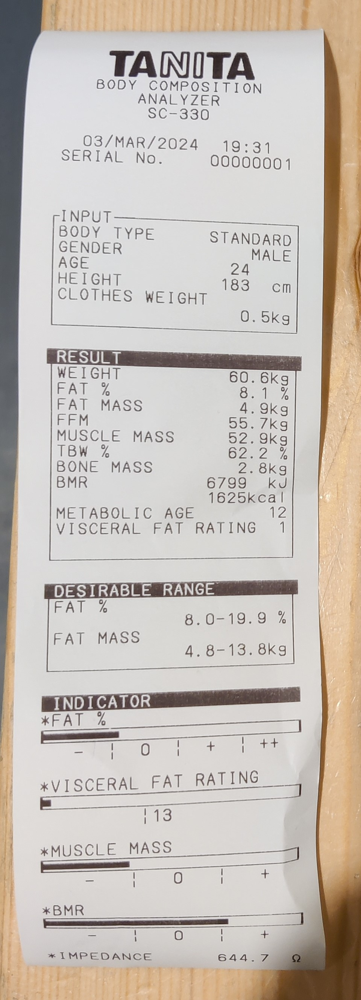
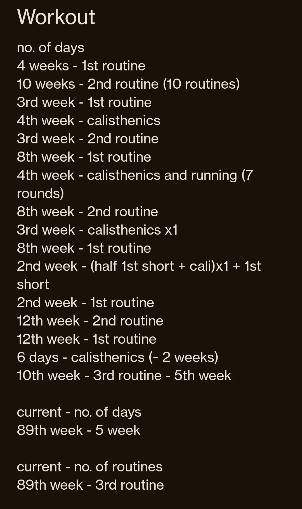

Fitness
I have been a fitness enthusiast for 7 years now. When I was first introduced to the gym by my friend Yash in 2017, my weight was ~ 49Kg and my height was 180cm. Although, I could easily do muscle-ups back then, I was way too underweight and needed to gain real strength. I have since gained 22 Kg. My peak weight was 72 Kg in the summer of 2023, with a fat percentage of 13-15%. That marked the end of my 6 year long weight-gain journey which fell just a little short of my long-time goal of 75 Kg.
In high-school I played basketball for around 5 years. I always played football and cricket for fun. Although I occasionally had my moments of excellence in some important games, I was not really great at any of the sports. We were also made to regularly practice yoga throughout school life.
Current Goals
For the past few months, I have been moving a lot so I haven't been consistent with my diet and fitness, so I have dropped in weight. My plans have also become less intense. I want to now slowly increase my muscle mass while maintaining fat at desired levels with optimum cardio, stretching and posture exercises, which was not the focus before. I want my fitness goals to complement the rest of my life so I work more efficiently instead of being more tired in general.

Here you can see my body weight information. I aim to weigh 65 Kg again by the end of March, 2024 while maintaining the same fat percentage. I am also trying to work on my posture which has been affected from incorrect guitar playing posture. I am doing 2 days of the intermediate workout and a 3rd day of calisthenics, in a week. So essentially, I reduce my time in the gym from 4 to 3 days a week now. I am taking it more easy with achieving set goals and am focussing more on form, strength, endurance, posture and consistency now instead, and am setting more goals in these areas as well.
Training Routine
When you start out, it is important that you focus on compound exercises like squats, deadlifts etc.. that target multiple muscle groups at once. This builds your core strength. After a good amount of time, it helps to move on to isolation exercises that target specific muscle groups. A plan then involves targeting a few muscle groups each day of the week, with breaks in between.
I followed this beginner workout plan when I first started out in 2017. Looking back, I could have better utilized my newbie gains stage by focussing on compound exercises only, instead of rushing to isolation exercises. Newbie gains refers to the stage where you just start out and make the most muscle development, with the least effort, in your entire gym life. There are many articles online on how to maximise your newbie gains.
Afterward, I trained with the gym trainer for a few months then moved on to this plan, that I still follow, that is linked here. The plan is an entry to a competition where each participant submitted their workout plan and the top 3 plans were chosen to be displayed. I follow the winner's plan, which also offers a switch of plan every 3 months (12 weeks) to enable maximum muscle growth.
This is the calisthenics workout I follow sometimes. Calisthenics refers to body-weight workouts like push-ups, pull-ups etc.. I personally have a lot of respect for the people that can do insane calisthenics. It is much harder than just static weight training because it also requires a lot of endurance along with strength. A strong-lifter or weight lifting champion plays a different game compared to a footballer or a tri-athelete.
They have changed the plan here to make it easier. The real plan was: 3 sets of 10 pull-ups, 10 chin-ups, 20 dips, 20 jump-squats, 20 push-ups, 50 crunches, 10 burpees, 60 second skipping rope. And that was the beginner's calisthenics workout plan. It is exciting to push yourself to the limit. Your body adapts quickly and you are able to do more and more. Beware of the sudden urge to puke though.

I try to record my workout time. I started doing this 2 years in. It is severely undercounted and it is important to note that there were several months in the 7 years that I did not go to the gym. The 1st and 2nd routines refer to those from the intermediate gym plans and the calisthenics refers to two days of the entire calisthenics routine in a week.
Other Resources
Sudharshanakriya breathing exercise is good for your mind and body. The most important element for survival is oxygen and this exercise helps you correct your voluntary and involuntary breathing again, when practiced regularly.
A great interactive tool that gives exercises and information about muscle groups.